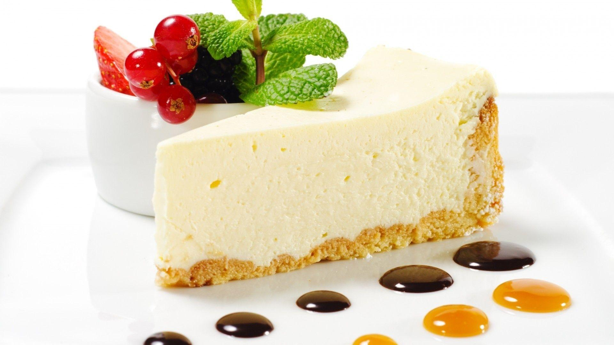

New York Style Cheesecake

A dense, thick cheesecake with a shortdough crust. This is THE definitive one! You'll never use
another
cheesecake recipe after you try this.
Ingredients
- 1.5 cups all-purpose flour
- 0.33 cup white sugar
- 1 egg, beaten
- 0.5 cup butter, softened
- 2.5 pounds cream cheese, softened
- 1.75 cups white sugar
- 3 tablespoons all-purpose flour
- 5 eggs
- 2 egg yolks
- .25 cup heavy whipping cream
Steps
- Preheat oven to 400 degrees F (200 degrees C). Lightly coat a 10 inch springform pan with spray oil. Note:
You could use a 9x13 inch pan instead.
- To make the crust: Combine 1 1/2 cups flour, 1/3 cup sugar, 1 egg and 1/2 cup butter or margarine. Spread to
the edges of the pan. Prick all over with a fork, then bake 15 minutes at 400 degrees F (200 degrees C).
Allow to cool.
- Increase oven temperature to 475 degrees F (245 degrees C). In a large bowl, combine cream cheese, 1 3/4
cups sugar, 3 tablespoons flour, 5 eggs and the yolks and mix thoroughly. Add cream and mix only enough to
blend.
- Pour filling over crust and bake for 10 minutes at 475 degrees F (245 degrees C). Reduce temperature to 200
degrees F (95 degrees C) and continue to bake for one hour. Turn oven off, but leave cake in for another
hour. Don't worry if it looks a little jiggly in the center.
- Chill overnight. This is imperative! If desired, top with your favorite fruit or serve plain.